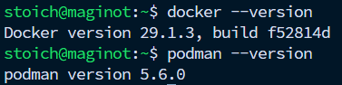
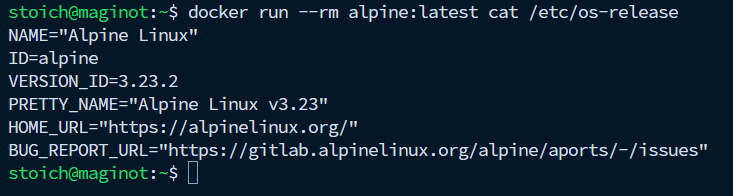
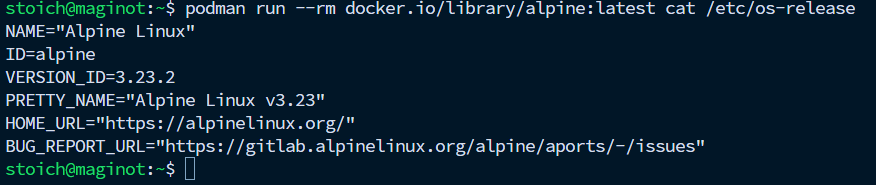
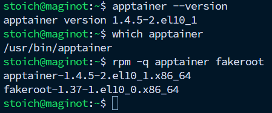
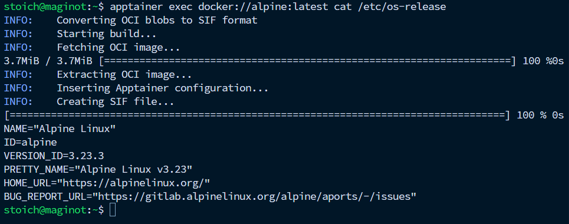
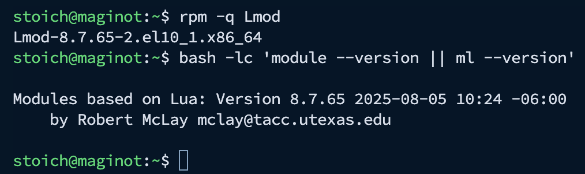
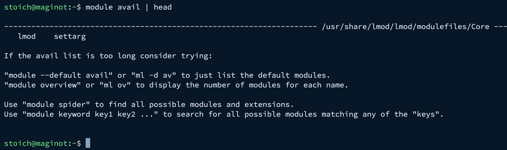
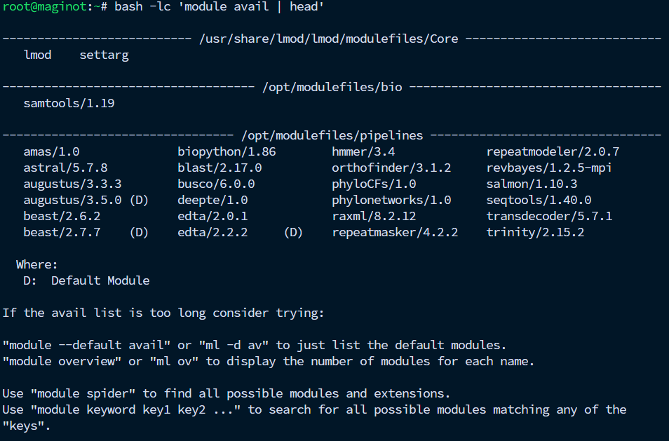
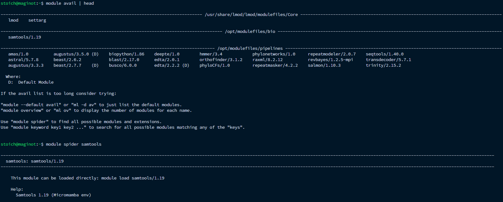

Contenedores y Entornos Reproducibles
Contexto y objetivo
En bioinformática es común que distintos proyectos (o incluso distintas etapas de un mismo pipeline) requieran conjuntos de herramientas diferentes y, con frecuencia, versiones distintas del mismo software. Esto puede deberse a cambios en dependencias, parámetros, formatos, actualizaciones de algoritmos o, simplemente, a la necesidad de repetir exactamente un análisis ya utilizado en una publicación, tesis o reporte técnico. En un servidor multiusuario, instalar software “a nivel sistema” suele ser insuficiente y puede provocar conflictos (librerías incompatibles, rutas mezcladas, ejecutables duplicados), además de aumentar el costo de mantenimiento.
Por ello, el objetivo de esta sección es implementar y documentar una estrategia de gestión de software que habilite la ejecución rápida, multiversión y reproducible de pipelines bioinformáticos, manteniendo un sistema base estable y facilitando la trazabilidad de versiones. Para lograrlo se combinan herramientas complementarias:
- Contenedores (Docker, Podman, Apptainer) para encapsular aplicaciones y dependencias en imágenes ejecutables de forma consistente, favoreciendo portabilidad y aislamiento.
- Entornos con Micromamba para crear entornos ligeros por proyecto con versiones específicas de herramientas (p. ej. desde conda-forge/bioconda) sin modificar el sistema base.
- Lmod (Environment Modules) como una capa de “menú” para seleccionar versiones con comandos simples (
module load,module swap), sin que los usuarios tengan que aprender rutas internas ni activar entornos manualmente. En este servidor, Lmod se utiliza para exponer versiones que internamente pueden provenir de:- Micromamba (entornos versionados): ideal para herramientas de uso común y rápida instalación.
- Apptainer (imágenes
.sif): ideal para pipelines complejos reproducibles o dependencias difíciles. - (Opcional) instalaciones nativas en
/optpara software compilado a mano cuando aplique.
La idea central es que Lmod no instala software: únicamente configura el ambiente (PATH y variables) para apuntar a una versión específica de manera controlada y consistente, mientras que Micromamba y los contenedores proporcionan el software y sus dependencias. Este enfoque reduce conflictos entre proyectos, facilita el mantenimiento y fortalece la reproducibilidad científica.
Estado actual: Docker y Podman instalados.
Docker se utilizará principalmente para servicios administrados (p. ej. herramientas internas, dashboards, servicios web).
Podman se utilizará como alternativa rootless para ejecutar contenedores sin daemon, cuando se requiera un modelo más seguro o aislado.
Versiones y verificación
docker --version
podman --version
Docker (prueba rápida, sin construir)
docker run --rm alpine:latest cat /etc/os-release
Podman (prueba rápida, sin construir)
podman run --rm docker.io/library/alpine:latest cat /etc/os-release
Apptainer (+ fakeroot)
Instalación:
sudo dnf install -y apptainer fakeroot fakeroot-libsVerifica que ya existe el comando
apptainer --version
which apptainer
rpm -q apptainer fakeroot
Prueba rápida (sin construir nada)
apptainer exec docker://alpine:latest cat /etc/os-release
Micromamba
Descargar el binario e instalarlo en /usr/local/bin:
sudo mkdir -p /usr/local/lib/micromamba
cd /tmp
curl -Ls https://micro.mamba.pm/api/micromamba/linux-64/latest \
| tar -xvj bin/micromamba
sudo mv bin/micromamba /usr/local/lib/micromamba/micromamba
sudo ln -sf /usr/local/lib/micromamba/micromamba /usr/local/bin/micromamba
sudo chmod 755 /usr/local/lib/micromamba/micromambaVerificación
micromamba --version
which micromambaPrefijo global (ambientes compartidos) y permisos “solo root escribe”
sudo mkdir -p /opt/micromamba/{envs,pkgs}
sudo chown -R root:root /opt/micromamba
sudo chmod -R 755 /opt/micromambaCon esto:
usuarios pueden leer/usar ambientes en
/opt/micromambausuarios no pueden crear/modificar ambientes ahí
Configuración global (canales y prioridades)
sudo mkdir -p /etc/micromamba
sudo tee /etc/micromamba/condarc >/dev/null <<'EOF'
channels:
- conda-forge
- bioconda
- defaults
channel_priority: strict
auto_activate_base: false
EOF
sudo chmod 644 /etc/micromamba/condarcHabilitar para todos los usuarios (activate/run) vía /etc/profile.d
sudo tee /etc/profile.d/micromamba.sh >/dev/null <<'EOF'
# Micromamba global (servidor)
export MAMBA_ROOT_PREFIX=/opt/micromamba
export CONDARC=/etc/micromamba/condarc
export MAMBA_EXE=/usr/local/bin/micromamba
# Habilita: micromamba activate / deactivate
eval "$("$MAMBA_EXE" shell hook -s bash)"
EOF
sudo chmod 644 /etc/profile.d/micromamba.shAplicar en sesión actual (o cerrar sesión y re-entrar)
source /etc/profile.d/micromamba.shCrear ambientes e instalar paquetes (solo como root)
Ejemplo de creación:
micromamba create -n bioinfo -y \
samtools=1.19.* mafft fastqcListar:
sudo micromamba env list
sudo micromamba list -n bioinfoInstalar algo adicional:
micromamba activate bioinfo
sudo micromamba install -n bioinfo -y iqtreeUsar el ambiente desde un script
#!/usr/bin/env bash
set -euo pipefail
# Asegura variables globales aunque el script corra sin login shell
source /etc/profile.d/micromamba.sh
micromamba run -n bioinfo -- samtools --version
micromamba run -n bioinfo -- mafft --versionReproducibilidad (lock del ambiente)
Export exacto (lista explícita de paquetes):
sudo micromamba env export -n bioinfo --explicit > bioinfo-linux-64.lockRecrear idéntico desde lock:
sudo micromamba create -n bioinfo_v2 --file bioinfo-linux-64.lock -yMultiversión de software (Lmod / Environment Modules)
Instalar Lmod en Rocky (EPEL + CRB)
sudo dnf install -y LmodVerificación:
rpm -q Lmod
bash -lc 'module --version || ml --version'
Asegurar que module funcione para todos (login y no-login)
El paquete de Lmod instala scripts de inicialización en /etc/profile.d/ (p. ej. z00_lmod.sh) que cargan el init de Lmod.
Prueba en una sesión nueva (login shell):
module avail | head
Árbol local de modulefiles y permisos
Se creó un árbol de modulefiles local en /opt/modulefiles:
sudo mkdir -p /opt/modulefiles/{bio,pipelines,core}
sudo chown -R root:root /opt/modulefiles
sudo chmod -R 755 /opt/modulefilesPermisos recomendados:
directorios:
755(todos pueden listar/entrar)archivos
.lua:644(todos pueden leer; solo root escribe)
Hacer que Lmod siempre vea /opt/modulefiles
Crear un script que corra al inicio de sesión y agregue ese path al MODULEPATH:
sudo tee /etc/profile.d/z10_modulepath.sh >/dev/null <<'EOF'
# Site modulefiles (Lmod)
if type module >/dev/null 2>&1; then
module use --append /opt/modulefiles/bio
module use --append /opt/modulefiles/pipelines
module use --append /opt/modulefiles/core
fi
EOF
sudo chmod 644 /etc/profile.d/z10_modulepath.shNota: abre una nueva sesión SSH (o recarga con source /etc/profile.d/z10_modulepath.sh) para que aplique.
Publicar “programas” a usuarios mediante módulos
Micromamba (envs versionados) + Lmod
Ejemplo: si existe un env en:
/opt/micromamba/envs/samtools-1.19
Crear el modulefile:
sudo mkdir -p /opt/modulefiles/bio/samtools
sudo tee /opt/modulefiles/bio/samtools/1.19.lua >/dev/null <<'EOF'
help([[
Samtools 1.19 (Micromamba env)
]])
whatis("Samtools 1.19 via Micromamba")
conflict("samtools")
local envdir = "/opt/micromamba/envs/samtools-1.19"
prepend_path("PATH", pathJoin(envdir, "bin"))
prepend_path("LD_LIBRARY_PATH", pathJoin(envdir, "lib"))
setenv("SAMTOOLS_ROOT", envdir)
EOF
sudo chmod 644 /opt/modulefiles/bio/samtools/1.19.luaUso por parte del usuario:
module load samtools/1.19
samtools --versionApptainer (.sif) + Lmod (envolver comando)
Directorio de contenedores:
sudo mkdir -p /opt/containers
sudo chown -R root:root /opt/containers
sudo find /opt/containers -type d -exec chmod 755 {} \;
sudo find /opt/containers -type f -name "*.sif" -exec chmod 644 {} \;Ejemplo: imagen en:
/opt/containers/revbayes/rb_v125_mpi/revbayes_v125_mpi.sif
Crear modulefile:
sudo mkdir -p /opt/modulefiles/pipelines/revbayes
sudo tee /opt/modulefiles/pipelines/revbayes/1.2.5-mpi.lua >/dev/null <<'EOF'
help([[
RevBayes 1.2.5 (MPI) via Apptainer.
Este módulo expone:
- rb-mpi : ejecuta rb-mpi (1 proceso) en el directorio actual.
- rb-mpi-np N : ejecuta rb-mpi con mpirun -np N (multinúcleo) en el directorio actual.
Ejemplo típico:
cd /ruta/al/proyecto/Clade_001/input
module load revbayes/1.2.5-mpi
rb-mpi-np 8 Clade_001.rev
Binds extra (por ejemplo /srv):
export APPTAINER_BINDPATH="/srv:/srv"
]])
whatis("RevBayes 1.2.5 MPI (Apptainer)")
conflict("revbayes")
local img = "/opt/containers/revbayes/rb_v125_mpi/revbayes_v125_mpi.sif"
setenv("REVBAYES_SIF", img)
-- 1) Wrapper mínimo (1 proceso), ejecuta en /work (= $PWD del host)
set_shell_function("rb-mpi",
"apptainer exec --cleanenv --bind \"$PWD\":/work --pwd /work " .. img .. " rb-mpi \"$@\"",
"true")
-- 2) Wrapper multinúcleo: primer argumento = N procesos
set_shell_function("rb-mpi-np",
"N=${1:-1}; shift; apptainer exec --cleanenv --bind \"$PWD\":/work --pwd /work " .. img .. " mpirun -np $N rb-mpi \"$@\"",
"true")
EOF
sudo chmod 644 /opt/modulefiles/pipelines/revbayes/1.2.5-mpi.luaUso por parte del usuario:
module load revbayes/1.2.5-mpi
rb-mpi --help | headNota importante: evita conflictos con environment-modules
En Rocky puede coexistir environment-modules y Lmod; sin embargo, si ambos están instalados, el comando module puede apuntar al “equivocado” (alternatives). Para evitar confusiones, se recomienda estandarizar el uso de Lmod (y evitar instalar environment-modules si no es necesario).
Buenas prácticas de reproducibilidad
Registrar el estado del ambiente en salidas y bitácoras (
module list,micromamba env list).Para entornos con Micromamba, conservar archivos
--explicit(*.lock) para recreación idéntica.Para contenedores, registrar ruta exacta, versión y/o hash de la imagen
.sif.Evitar instalaciones globales “ad-hoc” sin documentación (preferir módulos, envs o contenedores versionados).
Checklist final (uso por usuarios)
Como administrador (verificación básica):
sudo -i
bash -lc 'module avail | head'
Como usuario (sesión nueva):
module spider samtools
module avail | head
module spider samtools
module spider es útil para localizar módulos cuando el árbol crece en número de versiones.